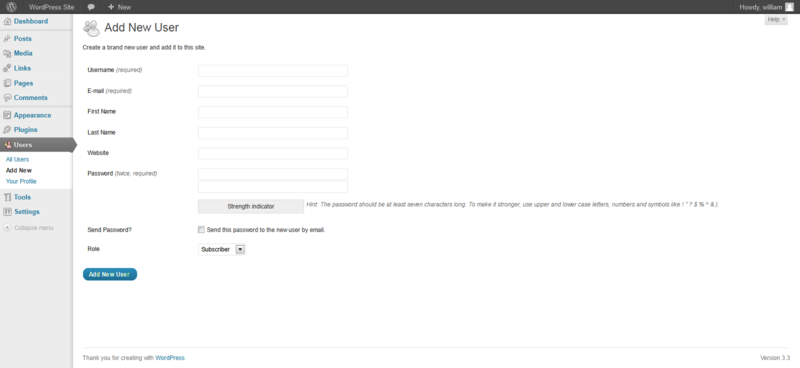
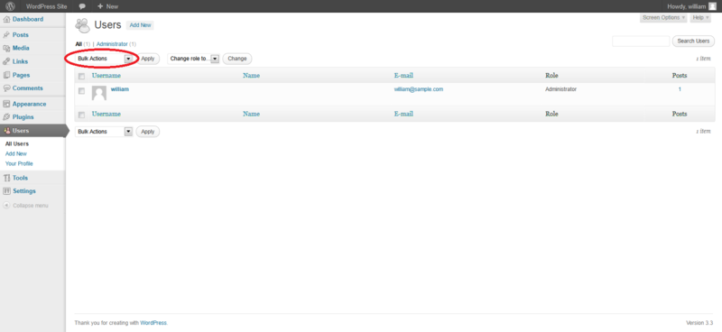

4.4.3 Test Account Provisioning Process (OTG-IDENT-003)
Summary
The provisioning of accounts presents an opportunity for an attacker to create a valid account without application of the proper identification and authorization process.
Test objectives
Verify which accounts may provision other accounts and of what type.
How to test
Determine which roles are able to provision users and what sort of accounts they can provision.
• Is there any verification, vetting and authorization of provisioning requests?
• Is there any verification, vetting and authorization of de-provisioning requests?
• Can an administrator provision other administrators or just users?
• Can an administrator or other user provision accounts with privileges greater than their own?
• Can an administrator or user de-provision themselves?
• How are the files or resources owned by the de-provisioned user managed? Are they deleted? Is access transferred?
Example
In WordPress, only a user's name and email address are required to provision the user, as shown below:

De-provisioning of users requires the administrator to select the users to be de-provisioned, select Delete from the dropdown menu (circled) and then applying this action. The administrator is then presented with a dialog box asking what to do with the user's posts (delete or transfer them).

Tools
While the most thorough and accurate approach to completing this test is to conduct it manually, HTTP proxy tools could be also useful.